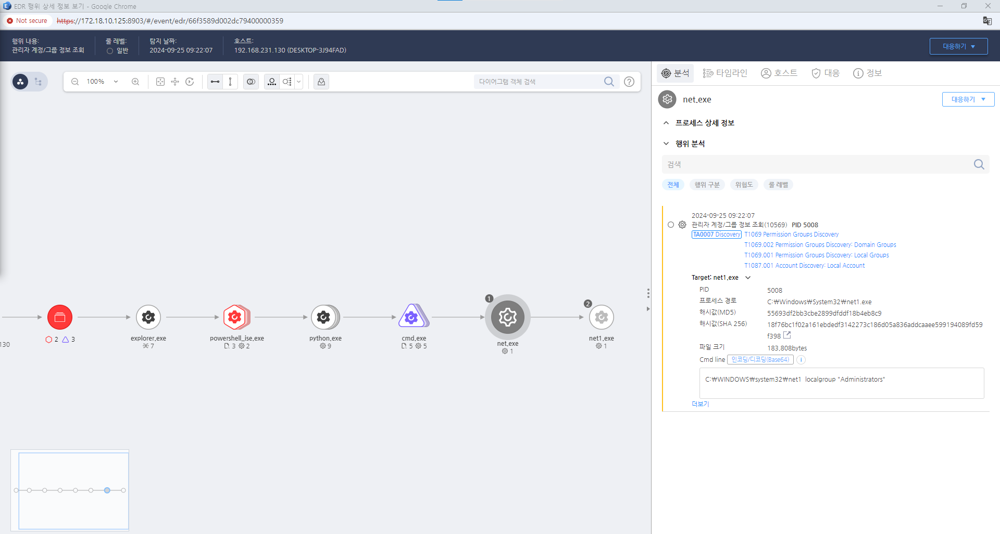

T1069.001.02 그룹 권한 검색, 로컬 그룹
D3FEND
MITRE ATT&CK 액션을 기준으로 대응 방안을 작성
Detection
관리자 계정/그룹 정보를 조회하는 행위를 탐지합니다.
Detection(EDR)

Response
해당 행위를 수행한 프로세스를 종료합니다.
Mitigations
권한 분리 및 최소화
- 사용자 및 그룹의 권한을 최소화하여 불필요한 접근을 제한하고, 권한이 필요한 작업에만 접근할 수 있도록 합니다.
정기적인 사용자 및 그룹 감사
- 시스템 내의 사용자 및 그룹을 정기적으로 감사하여 비정상적인 권한 부여나 불필요한 계정을 제거합니다.
권한 변경 모니터링
- 권한 변경 이력을 기록하고 이를 정기적으로 검토하여 의심스러운 변경 사항을 신속하게 탐지합니다.
계정 잠금 정책
- 비정상적인 접근 시도를 탐지할 수 있도록 계정 잠금 정책을 설정하여 일정 횟수 이상의 실패한 로그인 시도가 발생하면 해당 계정을 잠급니다.
계정 사용 정책
- 사용자가 시스템에 로그인할 때 강력한 인증 방법(예: 다중 인증)을 요구하여 권한을 가진 계정의 안전성을 강화합니다.
Affected Techniques
Action 실행시 함께 영향을 받는 다른 Techniqes
| D3FEND |
| D3-USICA User Session Init Config Analysis |
| D3-UBA User Behavior Analysis |